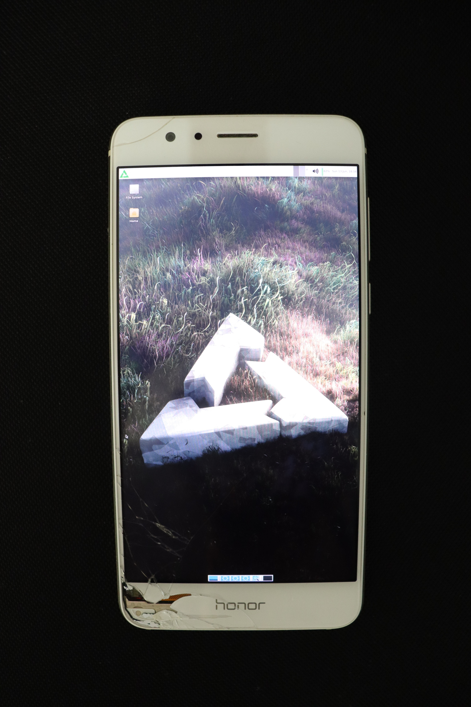

Huawei Honor 8 (huawei-frd)
The Huawei Honor 8 has been updated to Android 8 in some regions, while others are stuck on Android 7.0. Android 8 uses a different partition layout and kernel. This port is based on Android 7.0 kernel and probably won't work on devices updated to Android 8. If you have a device that got the Android 8 update you might need to make a port based on the Android 8 kernel. Take a look at huawei-warsaw for information on dealing with the Android 8 partition layout.
|
 Honor 8 running xfce4 on framebuffer | |
| Manufacturer | Huawei |
|---|---|
| Name | Honor 8 |
| Codename | huawei-frd |
| Released | 2016 |
| Category | testing |
| Original software | Android 6.0 (upgradable to Android 8.0 in some regions and to 7.0 in others) |
| Hardware | |
| Chipset | HiSilicon Kirin 950 |
| CPU | 4x2.3 GHz Cortex-A72 & 4x1.8 GHz Cortex-A53 |
| GPU | Mali-T880 MP4 |
| Display | 1080x1920 IPS LCD |
| Storage | 32 GB |
| Memory | 4GB |
| Architecture | aarch64 |
{kind=link}
| USB Networking |
Works
|
|---|---|
| Flashing |
Partial
|
| Touchscreen |
Works
|
| Display |
Works
|
| WiFi | |
| FDE | |
| Mainline | |
| Battery | |
| 3D Acceleration |
Broken
|
| Audio | |
| Bluetooth | |
| Camera |
Broken
|
| GPS | |
| Mobile data | |
| SMS | |
| Calls | |
| USB OTG |
Works
|
| NFC | |
| Accelerometer | |
|---|---|
| Magnetometer | |
| Ambient Light | |
| Proximity | |
| Hall Effect | |
| Barometer | |
| Power Sensor | |
| Camera Flash | |
|---|---|
| Keyboard | |
| Touchpad | |
| USB-A | |
| HDMI/DP | |
| Ir TX | |
| Ir RX | |
| Stylus | |
| Haptics | |
| Ethernet | |
| FOSS bootloader | |
Contributors
- Sandelinos
Maintainer(s)
- Sandelinos
Users owning this device
- Eriki73 (Notes: locked bootloader)
- Sandelinos (Notes: Android 7 partition layout)
Unlocking the bootloader
Huawei has stopped providing unlock codes for their devices so you'll need to pay for a code from a 3rd party or use PotatoNV, which requires removing the back cover with a hairdryer. See Bootloader#Huawei. PotatoNV overwrites your fastboot with a generic one and causes 'fastboot boot' and flashing the boot partition to not work.
How to enter flash mode
With the device powered off, hold Volume Down and plug in the USB.
Installation
- Unlock the bootloader.
- Follow the Installation guide to flash rootfs.
- (optional) install TWRP
- TWRP from twrp.me is only compatible with devices updated to Android 8.
- Here is a TWRP compatible with Android 7.0 devices
- Flash TWRP to recovery partition
- fastboot flash recovery twrp-3.1.1-1-frd.img
- Boot into TWRP and install twrp to boot partition (We'll overwrite recovery with postmarketOS kernel later)
- Flash the kernel to the recovery partition
- The boot partition is just 32 MB, while the boot.img we get from pmbootstrap is ~35 MB.
- If you unlocked your bootloader with PotatoNV fastboot won't be able to flash to the boot partition even if it fit.
- pmbootstrap flasher flash_kernel --partition recovery
See also
- pmaports!2247 Initial merge request
- Kernel source copied to GitLab
- Kernel source on Huawei's site